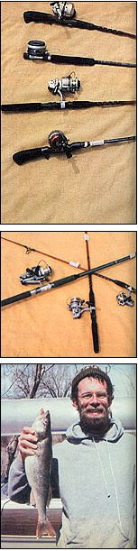

Photos by the Author
(FROM TOP) Rods are built to work best with one of the four basic types of reels. Shown here, they are (from top to bottom) spin casting, fly casting, spinning, and bait casting. . . . Spinning outfits are available in a number of different weights, as shown in this photo. . . . This walleye (or yellow pike) will make a downright delicious meal!